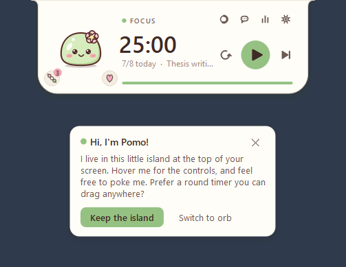
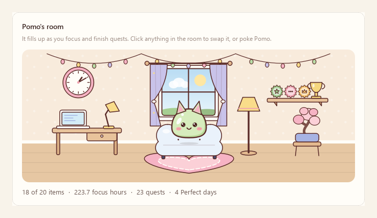

Meet Pomo
A little buddy who notices
Pomo's eyes follow your cursor. Pomo looks determined while you focus, relaxes on breaks, jumps for joy when you finish, dozes off when you wander away, and gets grumpy if you poke too much.

Starring Pomo the matcha mochi, who sits on your timer, cheers you on, takes breaks with you and keeps an eye on your coding agents.
Latest version · Windows 10 or 11 (64-bit) · free · no admin rights · no account

Pomo's eyes follow your cursor. Pomo looks determined while you focus, relaxes on breaks, jumps for joy when you finish, dozes off when you wander away, and gets grumpy if you poke too much.
And a few things it didn't know it needed.
A slim island at the top of your screen, or a round orb you drag anywhere. One click switches.
Learns your best session length, side-eyes YouTube, parks stray thoughts, and pauses when you step away.
Real rain and café recordings, brown noise and a lo-fi loop, playing seamlessly. Pomo puts on headphones too.
Three small goals a day, like two pomodoros before 10 AM, with a badge for each and outfits to unlock.
A room on your dashboard that fills up with furniture as you focus. Swap things around with a click.
Claude Code, Codex CLI and Gemini CLI: see when one works or needs you, approve requests and reply from Pomo.
Plan your work into pomodoros or look back at your week, with Claude, ChatGPT, Gemini or Grok and your own key.
Focus time, streaks, a consistency heatmap, your best hours, top tasks, and a session log with CSV export.
Hold a shortcut and ask out loud, from any app. Pomo can read its answers back in a soft voice.
It starts with a cushion and a rug under a window. Every focus hour, quest and Perfect day brings something new: a desk, plants, string lights, a trophy shelf for your badges, even a sleepy cat.


When a break ends, Pomo shows your task, the window you were in, what your agents did while you were away and the thoughts you parked. One click brings that window back.

Pomo watches your coding agents so you don't have to. A thought bubble while they work, a "!" when one needs you, and their exact questions and messages, ready to answer from Pomo.

"45 minutes on the thesis, then 10 off, three rounds." Pomo lines up the plan and starts the timer. Ask for a review of your day or your week, or a pep talk.

Focus time and streaks, a consistency heatmap, your best hours and weekdays, what Pomo has learned about you, and your quests, badges and room.

Pet Pomo, feed the treats you earn by focusing, and play Petal Catch, Mochi Stack or Memory Match on your break.
Eight pastel themes and twenty-one outfits, and Pomo dresses for what you're doing.

Your history, ratings, tasks and parked thoughts live in a folder on your PC. No account, no server, no tracking.
Ask Pomo only sends something when you ask, and only to the AI provider you picked. Keys are encrypted for your Windows account.
Every line is on GitHub. Updates are checked against GitHub's checksum before Pomo installs them.
Free for Windows 10 and 11. Pomo updates itself with one click.
Windows may say "Windows protected your PC" because the installer isn't code-signed. Click More info, then Run anyway.